بسم الله الرحمن الرحيم
Sayyid Abul Ala Maududi - Tafhim al-Qur'an - The Meaning of the Qur'an
 64.
Surah At Taghabun (Mutual Loss and Gain)
64.
Surah At Taghabun (Mutual Loss and Gain)
The Surah takes its name from the sentence Dhalika yaum-ut taghabun of verse 9, thereby implying that it is the Surah in which the word at taghabun has occurred.
Muqatil and Kalbi say that it was partly revealed at Makkah and partly at Madinah. Hadrat Abdullah bin Abbas and Ata bin Yasar say that vv. 1-13 were revealed at Makkah and vv. 14-18 at Madinah. But the majority of commentators regard the whole of the surah as a Madinan Revelation. Although there is no internal evidence to help determine its exact period of revelation, yet a study of its subject matter shows that it might probably have been sent down at an early stage at Madinah. That is why it partly resembles the Makkah surahs and partly the Madinan Surahs.
The theme of this surah is invitation to the Faith and obedience (to Allah) and the teaching of good morals. The sequence followed is that the first four verses are addressed to all men; verses 5-10 to those men, who do not believe in the invitation of the Qur'an; and verses 11-18 to those who accept and believe in this invitation.
In the verses addressed to all men, they have been made aware in a few brief sentences of the four fundamental truths:
First, that the universe in which they live is not Godless, but its Creator, Master and Ruler is an All Powerful God, and everything in it testifies to His being most Perfect and absolutely faultless.
Second, that the universe is not without purpose and wisdom, but its Creator has created it with truth no one should be under the delusion that it is a mock show, which began without a purpose and will come to an end without a purpose.
Third, that the excellent form that God has created you with and the choice that He has given you to choose between belief and unbelief is not a useless and meaningless activity so that it may be of no consequence whether you choose belief or unbelief. In fact, God is watching as to how you exercise your choice.
Fourth, that you have not been created irresponsible and un-answerable. You have to return ultimately to your Creator, and have to meet the Being who is aware of everything in the universe, from Whom nothing is hidden, to Whom even the innermost thoughts of the minds are known.
After stating these four fundamental truths about the Universe and Man, the address turns to the people who adopted the way of unbelief, and their attention is drawn to a phenomenon which has persisted throughout human history, namely that nation after nation has arisen and ultimately gone to its doom. Man by his intellect and reason has been explaining this phenomenon in a thousand ways, but Allah tells the real truth and declares that the fundamental causes of the destruction of the nations were only two:
First, that they refused to believe in the Messengers whom He sent for their guidance, with the result that Allah too left them to themselves, and they invented their own philosophies of life and went on groping their way from one error to another.
Second, that they also, rejected the doctrine of Hereafter, and thought this worldly life to be an end in itself, and that there was no life hereafter when they would have to render an account of their deeds before God. This corrupted their whole attitude towards life, and their impure morals and character so polluted the world that eventually the scourge of God itself had to descend and eliminate them from the scene.
After stating these two instructive truths of human history, the deniers of the message of Truth have been admonished to wake up and believe in Allah, His Messenger and the Light of Guidance that Allah has sent in the form of the Qur'an if they want to avoid the fate met by the former peoples. Besides, they have been warned that the Day shall eventually come when all the former and the latter generations will be collected at one place and the fraud and embezzlement committed by each will be exposed before all mankind. Then the fate of each man will be decided finally on the basis as to who had adopted the path of the Faith and righteousness and who had followed the way of disbelief and denial of the Truth. The first group shalt deserve eternal Paradise and the second shall be doomed to everlasting Hell.
Then, addressing those who adopt the way of the Faith, a few important instructions have been given:
First, that whatever affliction befalls a person in the world, it befalls him by Allah's leave. Whoever in this state of affliction remains steadfast to the Faith, Allah blesses his heart with guidance; otherwise although the affliction of the one who in confusion or bewilderment turns away from the path of the Faith, cannot be averted except by Allah's leave, yet he becomes involved in another, the greatest affliction of all, namely that his heart is deprived of the guidance of Allah.
Secondly, that the believer is not required to affirm the faith with the tongue only, but after the affirmation of the Faith he should practically obey Allah and His Messenger. If he turns away from obedience he would himself be responsible for his loss, for the Holy Messenger of Allah (upon whom be His peace) has become absolved from the responsibility after having delivered the message of Truth.
Thirdly, that the believer should place his trust in Allah alone and not in his own power or some other power of the world.
Fourthly, that the worldly goods and children are a great trial and temptation for the believer, for it is their love which generally distracts man from the path of faith and obedience. Therefore, the believers have to beware some of their children, and wives lest they become robbers for them on the Way of God directly or indirectly; and they should spend their wealth for the sake of God so that their self remains safe against the temptations of Satan.
Fifthly, that every man is responsible only to the extent of his power and ability. Allah does not demand that man should exert himself beyond his power and ability. However, the believer should try his best to live in fear of God as far as possible, and should see that he does not transgress the bounds set by Allah in his speech, conduct and dealings through his own negligence.

In the name of Allah, the Compassionate, the Merciful.
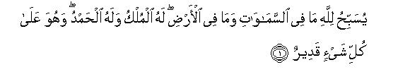
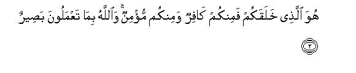
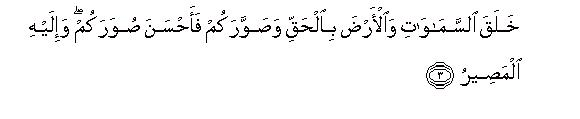
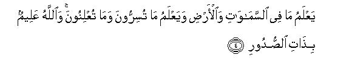
[1-4] Whatever is in the heavens and whatever is in the earth is glorifying Allah.1 His is the Sovereignty2 and His the Praise3 and He has power over all.4 He it is Who created you; yet some of you are disbelievers and some are believers,5 and Allah sees whatever you do.6 He has created the heavens and the earth with the truth and has shaped you, and shaped you well, and to Him you have to return in the end.7 He has the knowledge of everything in the heavens and the earth: He knows whatever you hide and whatever you reveal,8 and He knows the very secrets of the hearts.9
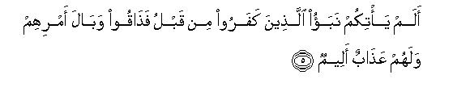
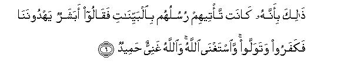
[5-6] Has not the news reached you of those who had disbelieved before this, and then tasted the evil results of their deeds? And in the Hereafter there awaits them a painful torment.10 They deserved this fate because their Messengers came to them with clear Signs,11 but they said, "Shall mere human beings show us guidance?"12 So they refused to believe and turned away; then Allah also became indifferent to them, and Allah is indeed Independent and worthy of all praise.13
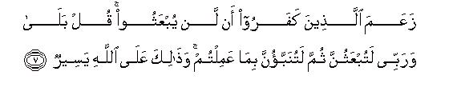
[7] The disbelievers assert that they shall never be raised up from death.14 Say to them, "Nay, by my Lord! You shall certainly be raised up.15 Then certainly you shall be told what you have done (in the world),16 and this is an easy thing for Allah to do."17
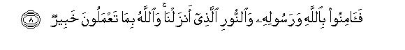
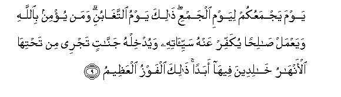
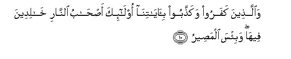
[8-10] Therefore, believe in Allah and His Messenger and in the Light that We have sent down.18 Allah is aware of whatever you do. (You shall know this) when He will gather you together on the Day of Gathering.19 That will be a Day of mutual Loss and Gain20 among the people. Whoever believes in Allah and does good works,21 Allah shall shake off his sins and will admit him into Gardens, underneath which canals will be flowing, to dwell therein for ever. This is the supreme success! And those who disbelieve and treat Our Revelations as false,22 shall be the inhabitants of Hell to dwell therein for ever, and that is a most evil abode!
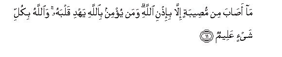
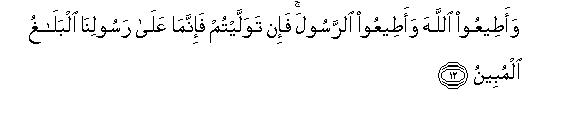

[11-13] No affliction23 can ever befall except by Allah's permission24 Whoever believes in Allah, Allah guides his heart,25 and Allah has knowledge of everything.26 Obey Allah and obey the Messenger, but if you turn away from obedience (you should know that the only responsibility of Our Messenger is to convey the Truth clearly and plainly27 Allah is He beside Whom there is no god. Therefore, in Allah alone should the believers place their trust.28
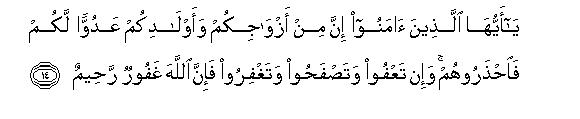
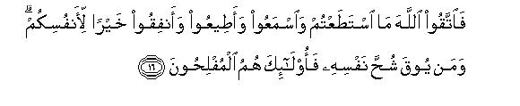
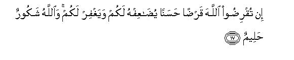
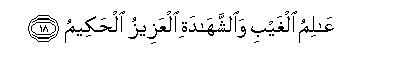
[14-18] O you who have believed, some among your wives and your children are your enemies: beware of them. And if you pardon and overlook and forgive, Allah is surely All-Forgiving, All-Merciful.29 Your worldly possessions and your children are but a trial, and it is Allah with Whom there are rich rewards.30 Therefore, fear Allah as far as you can,31 and listen and obey and spend your wealth : this is for your own good. And those who are saved from the greed of their own hearts, are truly successful.32 If you lend to Allah a goodly loan, He will pay you back manifold33 and will forgive you your faults. Allah is Appreciative and Forbearing.34 He knows the open and the hidden. He is the All-Mighty, the All-Wise.
1For explanation, see E.N. I of the commentary on Surah AI-Hadid. A study of the following theme by itself shows why the discourse has ban begun with this sentence. What has been stated below about the Universe and Man is that Allah alone is their Creator, Master, Ruler, and He has not made this universe without purpose and wisdom, that Man has not been created and left irresponsible, so that he may act as he may please, and there should be nobody to call him to account, and that the Ruler of this universe is not a care-free and ignorant king so that he may have no knowledge of what is happening in his kingdom. The best introduction to this theme could be the same as has been couched in this brief sentence. In view of the context, the introduction means: In whichever direction you may turn your gaze, from the earth to the limitless vastnesses of the heavens, you will clearly see that everything from a particle to the great galaxies not only testifies to the existence of God but also bears evidence that its God is free from every defect every weakness and error. Had them been the least probability of a defect or fault, weakness or deficiency, in His essence and attributes, in His acts and decrees, this perfect and wise system could not have come into being at all, nor continue to function so consistently and immutably from eternity to eternity.
2That is, "The Kingdom of the universe solely belongs to Him. He has not just created it and left it alone after giving it the initial push, but He alone is actually ruling over it every moment. No one else has any role or share whatever in this rule and sovereignty. If others possess temporarily and on a limited scale some powers of ownership or rule somewhere in the universe, these are not their personal powers, which they might have acquired by virtue of their own power, but these have been granted to them by Allah. They possess these powers as long as Allah wills, and they can be withdrawn as and when He so desires."
3In other words; He alone is worthy of all praise. Whatever other being has any praiseworthy quality, it has ban granted by Allah. And if hamd (praise) be taken in the sense of shukr (thankfulness), the meaning would be: In reality Allah alone is worthy of being thanked, for all. good things in the world have been created by Him, and He alone is the teal Benefactor of all kinds of creation. When we thank another being for favor, we thank it for the reason that Allah conveyed His blessing thought it or him to us, otherwise neither the being itself is the creator of the blessing nor could it convey the blessing to you without Allah's permission and help.
4That is, "He is the possessor of absolute power: He can do whatever. He wills, there is no power to restrain or limit His Omnipotence.
5It has four meanings and all arc correct in their respective places:
First, that "He alone is your Creator, yet some of you deny His being the Creator and others acknowledge this truth. " This meaning becomes obvious when the first and the second sentences arc read together.
Second. that "He Himself has created you with the nature that if you choose to adopt unbelief, you may do so, and if you choose to affirm belief, you may do so. He has not compelled you to either accept or reject the Faith therefore, you yourselves arc responsible for your adopting belief or unbelief." This meaning is confirmed by the following sentence: "Allah sees whatever you do." That is, By giving you this choice He has put you to the test, and He is watching how you exercise this choice."
The third meaning is. "He had created you with a sound, wholesome nature, which demanded that you should all adopt the way of the Faith, yet some of you adopted unbelief, which was opposed to the nature and purpose of their creation, and some of you adopted the way of the Faith, which was in conformity with their nature This theme becomes obvious when this verse is read along with verse 30 of Surah Ar-Rum which says: "Set your face sincerely and truly towards Faith, and be steadfast on the Nature whereupon Allah has created mankind. There can be no alteration in the Nature made by Allah. This is the right and true Faith.' And this very theme is explained by several Ahadith in which the Holy Prophet (upon whom be Allah's peace) has repeatedly stated that every man has been created on true human nature; then polytheism and deviation befall him from outside (For futher explanation, see E.N.'s 42 to 47 of the commentary of Surah Ar-Rum) Here, it may he pointed out that no Divine Book has ever presented the concept of man's being a sinner by birth, which Christianity has embraced as its fundamental doctrine for 1,500 years. Recently even Catholic scholars themselves have started expressing the view that there is no basis for this doctrine in the Bible. The famous German biblical scholar Rev. Herbert Haag, writes in his book, Is Original Sin in Scripture "Among the earliest Christians, at least till the 3rd century A.D., there existed no such creed that man was a sinner by birth, and when this idea started spreading among the people, the Christian scholars continued to contradict it for two centuries. At last in the 5th century A.D. St Augustine by the power of his logic made this idea a part of the fundamental beliefs of Christianity: 'Mankind is heir to the original sin committed by Adam, and there is no way to salvation for man except through the Atonement made by Christ."
The fourth meaning is: "Only Allah brought you into existence from nonexistence: you were not, then you became. This was such a simple thing that if you had thought over it seriously and seen that life is the actual blessing through which you are benefiting by the other blessings in the world, none of you would have adopted the attitude of disbelief and rebellion against your Creator. But some of you did not give it due thought, or thought wrongly, and adopted the way of disbelief, and some others adopted the same way of belief and faith which was the very demand of correct thinking.
6In this sentence "seeing" does not merely mean to see, but it automatically gives the meaning that man will be rewarded or punished according to his actions and deeds. It is just like a master's taking a person into service and then telling him: "I shall sec how you perform your duties," which implies: "If you perform your duties well, I shall reward you fully; otherwise I shall call you to account for your negligence."
7In this verse three things have been stated in their sequence, which are well connected logically:
First, it has been said that Allah has created this universe with the truth. When the word "with the truth" is spoken for a news, it means a true news; when it is spoken for a command, it means a command based on justice; when it is spoken for a statement, it means a correct statement; and when it is used for an act, it implies an act which is wise, reasonable and useful. Now, khalq (to create) is an act; therefore, to say that the universe has been created with the truth, would inevitably mean that the universe has not been created for fun but it is a serious work of a Wise Creator: everything in it has a rational object and purpose, and the element of its being purposeful is so evident that if a sensible person understands the nature of a thing well, it cannot be difficult for him to know the rational and wise purpose for which it has been created. All of modern science testifies that whenever man has succeeded in understanding the true nature of a thing by careful thought, research and investigation, he has also come to know eventually the purpose and object of its creation, and this understanding of its purpose has led him to countless inventions which are now being used in civilized human life. This could not be possible, had this universe been the plaything of a carefree person, devoid of any wisdom and purpose. (For further explanation, see E.N. 46 of AIAn-am, E.N. 11 of Yunus, E.N. 26 of Ibrahim, E.N. 46 of Ati-Nahl, E.N.'s 15, 16 of Al-Anbiya, E.N. 102 of Al-Mu'nunun, E.N. 75 of Al-'Ankabut, E.N. 6 of Ar-Rum, E.N. 34 of Ad-Dukhan, B.N. 28 of AI-Jathiyah).
Secondly, it has been said that in this universe Allah has created man in the best shape. Shape here does not imply only man's fact but his whole bodily structure; it also inclusions all those powers and abilities which man has been granted to function in this world. In both these aspects man has been given the best shape and form among the creatures of the earth, and on the same basis he has become worthy to rule over all the universe. He has been given an erect stature he has been given most appropriate feet to walk on; he has given most suitable hands to work with; he has been given such senses and organs to acquire knowledge by which he obtains every kind of information; he has been given a powerful mind to think and understand and deduce results from the body of acquired information; he has been given a moral sense and a power of discrimination by which he distinguishes between good and evil, right and wrong; he has been given the power of decision by using which he selects his own course of action, and decides as to where he should employ his efforts and where he should not. He has even been given the freedom that he may acknowledge his ('rector and serve Him if he so likes and reject Him if he pleases, or may make whomever he likes his gods, or rebel even against Him Whom he regards as his God. Along with all these capabilities and powers Allah has granted him the authority to appropriate everything created by Him, and he is practically using this authority in the world. (For further explanation, see E.N. 91 of Al-Mu'min).
The third thing which logically follows from the first two. as explained above has been stated in the third sentence of the verse "To Him you have to return in the end.' Obviously, when a creature endowed with power and authority has been created in a wise and purposeful system of the universe, wisdom does not require that he should be left to live irresponsibly in the world, but it necessarily requires that that creature should be accountable to the Being Who has granted it this position and rank and blessed it with these powers; 'Returning" in this verse does not merely mean to return but to return for accountability. In the following verses it has been explained that this return will not be in this life but into the second life after death, and its right time will he when all mankind will be resurrected and gathered together simultaneously for accountability, and in consequence of the accountability man will be rewarded or punished on the ground whether he had used the powers given him by God in the right way or the wrong way. As for the question, why cannot this accountability be held in the present lift of the world? and why is its right time only the second lift after death'? and why is it necessary that this accountability be held only when all mankind has passed away from this world, and all the former and the latter generations have been resurrected and gathered together simultaneously? If man only uses his common sense a little, he can understand that all this is perfectly rational as well as the very demand of wisdom and reason that accountability should be held in the second lift and of all mankind together. The first reason is that man is accountable for his whole life-work. Therefore, the right time of his accountability should necessarily be when his life-work has come to an end. The sccond reason is that man is responsible for all those effects and influences which he produces by his acts on the lives of others, and those influences and effects do not come to an end with his death but continue to influence others till ages after him Therefore, true accountability call he held only when the life-work of entire mankind has come to an end and all the former and the latter generations are gathered together simultaneously for accountability. (For further explanation, see E.N. 30 of Al-,A'raf. E.N.'s 10, 11 of Yunus E.N. 105 of Hud E.N. 35 of An-Nahl, E.N. 9 of AI-Hajj, E.N. 27 of An.Naml, E.N.'s 5,6 of Ar-Rum, E.N.'s 29, 30 of Suad, E.N. 80 of AI-Mu'min, E.N.'s 27 to 29 of Al-Jathiyah)
8Another translation can be: "Whatever you do secretly and whatever openly."
9That is, "He is aware not only of those acts of man, which come to the notice of the people but He knows also those acts which remain hidden from them. Moreover, He does not only see the superficial form of the acts, but also knows what intention and purpose underlay each act of man and with what motive and aim he did whatever he did- This is such a truth that if man ponders over it seriously, he can fully well understand that justice can be done only in the Hereafter, and only in God's Court can real justice be possibly done. Man's own intellect itself demands that man must be punished for each of his crimes. But everyone knows that in the world most of the crimes remain hidden. or the culprit escapes punishment because of insufficient evidence, or even if the crime becomes revealed, the culprit is so influential and powerful that he cannot be punished. Then the intellect of man also requires that man should not be punished only because his behavior resembles a criminal act, but it should be ascertained that he has committed the act intentionally and deliberately and at the time he committed it, he was acting as a responsible agent, his intention in actual fact was to commit the crime, and he knew that what he was doing was a crime. That is why the worldly courts inquire into these things when they decide the cases, and regard such an inquiry as a demand of the rule of justice. Burt is there any means available in the world by which these things may be precisely ascertained beyond every shadow of doubt? Considered from this viewpoint, this verse also bears a deep logical relevance to Allah Almighty's saying: e has created the earth and the heavens with Truth." The necessary demand of creating them with Truth is that perfect justice should prevail in this universe. Such justice can be established only when every act of a responsible man may not only remain concealed from the eyes of the one administering justice but the intention with which a person performed and act also should not remain hidden from him. And obviously, there cannot be any being, apart from the Creator of the universe, who can administer such justice, Now, if a person denies Allah and the Hereafter, he in fact, asserts that we humans live in a universe which is devoid of justice, which is rather a place where justice cannot possibly be done. The person whose intellect, mind and conscience feel satisfied at such an assumption would be a shameless creature if be thought he was bing progressive and rationalistic and those people antiquated and retrogressive who accept a highly rational concept about the universe, which the Qur'an presents.
10That is, "The evil that they tasted in the world in consequence of their misdeeds was neither the real punishment of their crimes nor the full punishment. The real and full punishment they have yet to suffer in the Hereafter. However, the people can learn a lesson from the torment that visited them. They can see how the nations which adopted an attitude of unbelief against their Lord, went an degenerating and consequently met with an evil and disgraceful end." (For further explanation, see E.N.'s 5, 6 of Al-A'raf, E.N. 105 of Hud).
11The word bayyinet as used in the original has a vast meaning. Bayyin (sing. of bayyinat) in Arabic is something which is very clear and manifest. Saying about the Prophets that they came with bayyinat gives the meaning that firstly, they brought such manifest signs as bore clear testimony to their having been appointed by Allah; secondly, they presented whatever they presented with rational and clear arguments; thirdly, there was no ambiguity in their teaching; they clearly explained what was the truth and what was falsehood. what was lawful and what was unlawful, what path man should follow and what he should avoid.
12This was then the foremost and basic cause of their degeneration and ruin Mankind could not have known the right course of action in the world unless their Creator gave them the correct knowledge, and there could be no practical means of bestowing such knowledge by the Creator unless He blessed some of the human beings with the knowledge and entrusted them with the duty to convey it to other human beings. For this purpose He sent the Prophets with the manifest Signs bayyinat) so that there was-no reasonable ground for the people to doubt their being on the truth. But the people refused to believe that a human being could be a Messenger of God. Then, obviously there could be no other way for them to receive guidance. (For further explanation, see E.N. 11 of Surah Ya Sin). In this connection, however, a strange manifestation of the ignorance and folly of human beings is seen. They have in fact, never shown any hesitation in accepting the guidance of men, so much so that they have carried out gods of wood and stone according to their guidance, they have made human beings themselves God, the incarnation of God, even son of God. and they have adopted such strange viewpoints by following the guidance of their mis-leaders blindly, which ruined human civilization and morals altogether. But when the Messengers of God came to them with the truth, and they presented the pure Truth before them without any selfish motive, they said, "Shall mere human beings show us guidance?" This amounted to saying that if a human begin misled them, they would follow his guidance willingly, but if he showed the right path to them, his guidance was not acceptable.
13That is, when they treated the guidance sent down by Allah with indifference, then Allah also became indifferent to them and did not care what pit they fell in. Allah did not stand in need of their acknowledging Him God to sustain and support His Godhead. Nor was He in need of their worship, nor of their praise and adoration. He, in fact, willed to show them the right path only for their own good and well-being. But when they turned away from it, Allah also became heedless of them. Then, neither He gave them guidance, nor remained responsible for their protection, nor saved them from being afflicted with calamities, nor prevented them from bringing about their own ruin for they themselves were not keen for His guidance and help.
14That is, "This was the second basic error in which the deniers of the Truth have been involved in every age, and which has ultimately brought about their ruin. Although no denier of the Hereafter ever had any means of knowing, nor has he today, nor will he have in the future, that there is no life after death, vet these ignorant people have always asserted the same thing, whereas there neither exists any intellectual basis for denying the Hereafter with absolute certainty nor any scientific basis for it.
15This is the third place where Allah Almighty has instructed His Prophet to tell the people by swearing an oath by his Lord that such a thing shall certainly happen. First, in Surah Yunus, it was said: "They ask: Is what you say really true Tel! them: Yes, by my Lord, it is absolutely true and you have no power to avert it.;(v. 53). Then, in Surah Saba, it was said: "The disbelievers say: How is it that Resurrection is not overtaking us? Say, by my Lord, it will surely overtake you.' (v. 3)
Here, the question arises: What difference does it make for a disbeliever in the Hereafter whether you give him the news of its coming by swearing an oath or without swearing an oath? when he does not believe in it at all, will he believe in it only because you arc asserting this on oath? The answer is: In the first place, the addressees of the Holy Prophet (upon whom be Allah s peace) were the people, who knew from their personal knowledge and experience that he had never uttered a lie in his life. Therefore, even if they might have forged the most shameless slander against him with their tongue, yet in their hearts they could never conceive that a truthful man like him could say a thing on oath by Allah of which he himself was not convinced by knowledge and experience. Secondly, the Holy Prophet did not only present the doctrine of the Hereafter but also gave highly rational Arguments for it. What distinguishes a Prophet from others is that the arguments, however strong and cogent, that others may give for the Hereafter, can at the most make the listener admit that the occurrence of the Hereafter is more reasonable and probable than its absence. On the contrary, a Prophet stands at A notch higher level than a philosopher. His real position is not that be has arrived at the conclusion of the necessity of the Hereafter by the exercise of reason But his real position is that he has the knowledge that the Hereafter shall occur and says with conviction that it shall surely occur. Therefore, only a Prophet can swear an oath to declare this but not a philosopher. Then, faith in the Hereafter can be generated only by a 'Prophet's statement; the reasoning of a philosopher does not have the power to induce even himself to adopt it as his religious creed on the basis of his own argument, not to speak of another person. if the philosopher is really correct, he cannot go beyond 'should be or ought to be;' only a Prophet can assert with conviction that a thing "is and certainly is."
16This is the purpose for which the children of Adam will be resurrected; this also contains the answer to the question: what is the special need for it? If one keeps in view what has been discussed concerning vv. 1.4 above, one can easily understand that in this universe, which has been created with the truth, it would be highly unreasonable to imagine about man who has been given freedom to choose either belief or unbelief, who has been granted authority to appropriate many of the things in this universe, and who after choosing the way of belief or unbelief has accomplished much good or done evil on his own responsibility by making the right or the wrong use of his authority during his life, that when he has done all this , the good done by the virtuous and the evil committed by the criminal one should neither bear any fruit, nor should there be any time when his deeds and actions should be subjected to security The person who asserts such an irrational thing inevitably commits one of the two absurdities: either he thinks that although this universe is based on wisdom, yet a creature like man, who has been endowed with authority, has been created and left irresponsible here; or he thinks that this universe is a random creation devoid of the wisdom of a Wise Creator. In the first place, he makes a contradictory statement, for the existence of an irresponsible creature, endowed with authority. in a universe based on wisdom, is clearly against justice and wisdom. In the second case, he cannot give any rational being like man should come into being in a haphazardly created, foolish universe, and how he conceived the idea of justice. Only a stubborn person could uphold the belief that folly could generate wisdom and injustice justice, or the one who has become a mental patient because of his obsession for hair splitting.
17This is the second argument for the Hereafter. The first argument was for its necessity and this second is for its possibility. Obviously, when God could create such a grand and wonderful system of the universe without any difficulty and when He could create human beings in the world in the first instance, it cannot be difficult for Him to resurrect the same human beings and summon them before Himself for the purpose of accountability.
18That is, "When this is the truth and the whole human history testifies that the real cause of the destruction of the nations has been their disbelieving the Messengers and their denial of the Hereafter, then they should not insist on meeting the same doom by following their example, but should believe in the guidance presented by Allah and His Messenger and the Qur'an." Here, as the context itself shows, by "the Light that We have sent down", means the Qur'an Just as light itself is clearly seen and reveals everything that was hidden in darkness around it, so is the Qur'an a Light whose being based on the truth is self-evident ; in its Light man can solve and understand every problem that he cannot solve and understand exclusively by means of his own knowledge and intellect Anyone who has the Light can clearly see the straight path of Truth out of the countless, crooked paths of thought and action, and can follow the Straight Path throughout life in such a way that at every step he can know where the crooked by-paths are misleading and where the pitfalls of destruction are situated on the way, and what is the path of safety and security among them.
19"The Day of Gathering": the Resurrection, when all human beings horn in the world from the beginning of creation till the Last Day will be gathered together simultaneously. This theme has been fully explained in the Qur'an at several places; e.g. in Surah Hud it has been said: "That will be the Day when all the people shall gather together and will witness everything that will happen there." (v 103) And in Surah Al-Waqi'ah: "Say to them; Surely, the former and the latter, all shall be gathered together one day, the hour of which has already been appointed." (v. 50).
20The word yaum-ut-taghabun as used in the original is too vast in meaning to be explained in a word, or even a sentence, of any other language. Of all the names of the Resurrection that occur in the Qur'an, this name probably i5 the most meaningful Therefore, a little explanation is necessary to understand its meaning.
Taghabun is from ghabn, which can be pronounced both as ghabn and as ghaban. Ghabn is mostly used concerning commercial and business transactions and ghaban concerning opinion. Lexically, it has other meanings also, e.g. heedlessness, forgetfulness, a person's being deprived of his share, a man's harming another inadvertently in business or mutual dealing, etc.
The derivative taghabun implies the occurrence of ghabn between two or more persons. Thus, taghabun al-qaum means some people's treating others fraudulently. or a person's harming another person and the other's being harmed and damaged by him, or one's taking away the share of another and the other's being deprived of his share, or a person's incurring loss in business and another's gaining a profit, or some people's proving heedless or weak-minded in comparison to others.
Now consider that in this verse it has been said about the Resurrection: 'That will be a Day of taghabun (mutual loss and gain) among the people." These words automatically givc the meaning that in the world taghabun is a common thing, but this taghabun is superficial and deceptive, not the real and factual taghabun the real taghabun will take place on the Day of Resurrection. There it will become manifest as to who actually incurred the loss and who actually earned the profits, who actually was deceived and who proved to be prudent and sensible. who actually had invested all his life capital in a wrong bargain and become bankrupt and who had invested all his energies and abilities. wealth and time, in a good bargain and earned all the benefits and gains. which the former also could have earned had he not been deceived in understanding the truth about the world.
The commentators while explaining the meaning of Yawn-ut-taghabun have given several meanings of it, which are all correct, and throw light on different aspects of its meaning. Some commentators have explained that on that Day the dwellers of Paradise will take away that share of the dwellers of Hell which they would have had in Paradise had they done good deeds in the world as did the dwellers of Paradise and the dwellers of Hell will take away that share of the people of Paradise, which they would have had in Hell had they done evil deeds is the world. This is supported by a Hadith, which Bukhari has rdated in kitab ar-Riqaq. on the authority of Hadrat Abu Hurairah, saying that the Holy Prophet said: 'Whoever goes to Paradise will be shown the place which he would have had in Hell had he done evil deeds in the world so that he may give more and more thanks to God; and whoever goes to Hell will be shown the place which he would have had in Paradise had he done good deeds in the world so that he may feel more and more remorseful."
Some other commentators say that on that Day the wronged one will take away so many of the good deeds done by the wrongdoer as may be a suitable compensation for the wrong suffered, or the wrongdoer will be equal in weight with his usurped rights. For on the Day of Resurrection man will not possess any wealth which he they give to make up for the wrong done, there the only commodity worth exchange will be one's conduct. Therefore, whoever had wronged another in the world, will have to make up for the wrong done by surrendering some of his own good deeds in his favor, or by taking some of his sins on himself and suffering the punishment for them. This theme also has been reported from the Holy Prophet (upon whom be Allah's peace) in Ahadith. In Bukhari (Kitab ar-Riqaq) a tradition has been related from Hadrat Abu Hurairah, saying that the Holy Prophet said: "Whoever bears a burden of a wrong done to his brothel, should compensate him for it here, for in the Hereafter no one will have any wealth or money for compensation. There, some of his good deeds will he taken from him and given away to the wronged person, or if he did not have enough good deeds, some of the sins of the wronged person will be transferred to him." Likewise, in Musnad Ahmad there is a tradition from Hadrat Jabir bin 'Abdullah bin Unais. sag that the Holy Prophet said: "No dweller of Paradise will enter Paradise and no dweller of Hell will enter Hell until he will have compensated the other person for the wrong done to him so much so that one will have to compensate even for a slap given to another person. We asked; How will this compensation be made when on Resurrection we shall be naked and penniless? The Holy Prophet replied:Compensation will he made by means of the good deeds and the evil deeds." In Muslim and Musnad Ahmad there is a tradition from Hadrat Abu Hurairah, saying that the Holy Prophet upon whom by Allah's peace) once asked the people sitting in his assembly; "Do you know who is poor? The people replied: He who has nothing to possess The Holy Prophet said: In my Ummah the poor is he who appeared before his God on the Day of Resurrection with his acts of the Prayer and the Fast and the payment of the zakat the while he had abused some one, usurped the property of another, and shed blood or hit still another. Then his good deeds were taken away and given over to each of the wronged and when nothing was left of his good deeds to make compensation. sonic of the sins of each wronged one were transferred to him and he was east into Hell." In another Hadith which Muslim and Abu Da'ud have related on the authority of Hadrat. Buraidah, the Holy Prophet said:"If in the absence from home of a soldier for the cause of Allah, a person treats his wife and the people of his house treacherously. the person would be made to stand before the soldier on the Day of Resurrection, and the latter would be asked to take away whatever he liked from his good deeds. Saying this the Holy Prophet turned to us and said Then what do you say? That is, what do you think he would leave with him?"
Some other commentators say that tile word taghabun is mostly used concerning commerce and business, and in the Holy Qur'an at several places the attitude that the believer and the unbeliever adopt in their worldly lives has been compared to trade and commerce. If the believer giving up disobedience adopts obedience and invests his life and wealth and effort for the cause of God. he is giving up a bad bargain and investing his capital in a business which will fetch him much gain and profit in the end. On the contrary, if an unbeliever abandons the way of obedience and invests his entire capital in the way of disobedience to God, he in fact, is a trader who has purchased deviation for guidance, and will incur loss in the end. The gain and the loss of to both will become manifest on the Day of Resurrection. It may well so happen in the world that the believer appears to be the loser and the disbeliever the gainer But in the Hereafter they will see who actually had made the right bargain and who the wrong bargain This theme has occurred at many places in the Qur'an,e.g. in AI-Baqarah 16, 175, 207 Al- Imran 77,177 An-Nisa' 74; At-Taubah 111 An-Nahl95, Fatir 29, As-Saff 10.
Yet another from of taghabun is that in the world the people go on cooperating with one another in unbelief and sin, injustice and wickedness, with full peace of mind with the confidence that they are enjoying full mutual love and friendship. The mutual intrigues and comradeship of the members of wicked Families immoral guides and their followers, gangs of thieves and robbers alliances of corrupt and unjust officers and officials, groups of dishonest traders, industrialists and land owners, groups established to spread deviation, error and mischief, and nations and governments which support and uphold injustice and wickedness in the world, is based on the same confidence. The individuals belonging to each of these groups harbor the impression that they are good companions of one another and their mutual cooperation is proving very successful But when these people reach the Hereafter, they will suddenly wake up to the realization that they had been grievously mistaken and deceived. Each one of them would feel that the one whom he considered his best father brother wife husband child, friend, companion, leader, guide disciple or supporter and helper, had been, in fact, his worst enemy. Every kind of relationship and friendship and bond of love and reverence will change into enmity. They will all abuse and curse each other and each one will desire that maximum responsibility of his crimes be laid an the other and will strive to get him severely punished. This theme also has occurred at many places in the Qur'an, e.g. in AI-Baqrah: 167, AI-A'raf: 37 to 39, Ibrahim 21-22; AI-Mu'minum: 101, Al-'Ankabut: 12,13. 25; Luqman: 33, AI-Ahzab: 67,68; Saba: 31 to 33; Fatir 18: As-Saaffat: 27 to 3: Suad: 59 to 61: Ha Mim: As-Sajdah: 29; Az-Zukhruf; 67; Ad-Dukhan; 41; AI-Ma'arij; 10 to 14: 'Abasa 34 to 3.
21Believing in Allah does not merely imply believing that Allah exists but believing in Him in the way Allah Himself has taught through His Messenger and His Book. This belief by itself includes belief in Apostleship and belief in the Book. Likewise a good act also does not imply every such act as man may himself have adopted considering it a good act. or following a man-made criterion of morality, but it implies the righteous act that is in accordance with the Law sent down by God. Therefore no one should have the misunderstanding that believing in Allah and doing good deeds, without the medium of the Messenger and the Book will lead to the results being mentioned below. Whoever studies the Qur'an carefully cannot remain unaware that according to it no such belief is genuine belief in Allah and no such act is righteous at all.
22These words by themselves make manifest the meaning of unbelief(Kufr). Unbelief is nothing but denying the verse of Allah's Book to be Divine Revelation rejecting the truths expressed therein and refusing to follow and obey the commandments given in them; its results are those being mentioned below.
23The discourse now turns to the believers. While reading this passage one should keep in mind the fact that at the time when these verses were revealed. Muslims were passing through great hardships After years of persecution at Makkah they had left their home and emigrated to Madinah, where the sincere Muslims who had given them refuge had been doubly burdened. On the one hand, they had to support and sustain hundreds of the emigrants who were coming to them from different parts of Arabia; on the other they had become the target of the persecution and enmity of the enemies of Islam of entire Arabia.
24This same theme has also occurred in AI-Hadid: 22-23 above and we have explained it in E.N.'s 39 to 42 of the commentary of the Surah 'The same circumstances under which this thing was said there and the same object for which it was said underlie the verses here as well. This means that afflictions and hardships do not descend of themselves, nor has anyone in the world the power to cause an affliction to descend on anyone he may like by his own authority. AII calamities wholly depend on Allah's leave: He may allow an affliction to descend upon someone or may disallow it, And Allah's leave in any cast is based on one or other wisdom, directed to some ultimate good, which man neither knows, nor can understand.
25That is, "It is only belief in Allah which keeps man on the right path even in the face of an onslaught of afflictions and does not let him waver under the most trying circumstances. The one whose heart is devoid of belief either looks upon afflictions as a result of mere chance, or thinks they are brought or prevented by worldly powers, or considers them to be the work of such imaginary powers which human superstition regards as potent in bringing good and causing evil, or believes that God is the real Doer of everything but does not believe so truly and sincerely, In all these different cases mart degenerates. He endures the affliction. but then yields and bows to every false god, accepts, every humiliation, is ready to do any mean thing and commit any wrong act he does not hesitate to abuse God, even commit suicide. On the contrary, the heart of the person who knows and believes sincerely that everything is in the hand of Allah, that He alone in the Master and Ruler of the universe that only by His permission can an affliction befall and only by His command can it be averted, is blessed by Allah with the grace of patience and submission and of acquiescing in Divine will, and is granted the power to face every circumstance with determination and courage. Even under the most straitened circumstances the candle of the hope of Allah's bounty lights up his way and no affliction, however severe and trying, can dishearten him as to cause him to swerve from the right path, or how to falsehood, or invoke others than Allah for the redress of his grievances. Thus, every affliction opens up for him a new door to well-being and happiness and no affliction remains an affliction for him in actual fact but becomes in final result and analysis a blessing in disguise, for whether he falls a victim to it. or passes through if safely, in each case he emerges successful from the trial set him by his Lord. This same thing has been stated by the Holy Prophet (upon whom be Allah's peace) in a Hadith which has been reported unanimously by all the reporters, saying: `Strange is the affair of the believer! Whatever Allah decrees for him is good for him: when an affliction befalls him, he endures it patiently, and this proves good for him; when he is blessed with prosperity, he thanks his Lord, and this too proves good for him. Such a good fortune only falls to the lot of a believer."
26In this context this has two meanings: first, that Allah knows who really believes and what is the measure of his belief. So, on the basis of His knowledge He grants guidance only to that heart, which has belief in it, and grants it guidance precisely in accordance with the measure of belief. Another meaning also can be: that Allah is not unaware of the condition of His believing servants. He has not left them alone after having invited them to faith and subjected them at the same time to severe trials and temptations of the world. He knows exactly what hardships a believer is passing through in the world, and under what circumstances he is fulfilling the demands of his faith. Therefore, "O believers, you should rest assured that whatever affliction descends upon you by Allah's leave, in Allah's knowledge it must be directed to some ultimate good, which must be for your own well-being, for Allah is well-wisher of His believing servants: He does not will to subject them to afflictions and hardships without good reason."
27In view of the context, it means: "Whatever the circumstances. good or bad. you should remain steadfast to obedience to Allah and His Messenger. But if under the pressure of hardships you turned away from obedience, you would only harm your own selves. The only responsibility of Our Messenger was to guide you to the right path, which the Messenger has fulfilled in the best way possible."
28That is, "All Divine powers belong to Allah alone. No one else has any power to make or mar your destiny. He alone cat bring about a good time and He alone can avert a bad time. Therefore, whoever believes sincerely that Allah is One, has absolutely no other choice than to place his full trust in Him and to continue doing his duty as a believer with the conviction that goodness and well being only lie in the way that Allah has shown him. If he attains to success in this way, it will only he by Allah's help and leave; there is no other helper. And if he encounters difficulties, hardships, dangers and disasters in this way, Allah alone will rescue him, for there is no other rescuer beside Him."
29This verse has two meanings.
According to the first meaning, it applies to most of those difficulties, which are encountered by many believing men from their wives and the women from their husbands and the parents from their children in following the way of God. It seldom so happens in the world that a man has a wife and a wife a husband, who are full companions and helpers of each other in the matter of faith and righteousness, and that both may also have such children as may be the comfort of their eyes as regards faith and deeds, morals and conduct. Hut generally it so happens that if the husband is righteous and honest, the wife and children look upon his honesty and piety and righteousness as a misfortune for themselves, and want that the husband and the father should earn Hell for their sake, and giving up the distinction between the lawful and the unlawful should provide means of luxury and enjoyment, sin and vice, for them in every passable way. On the contrary, many a time a pious believing woman happens to have a husband, Who does not at all approve her obedience to the Laws of God, and the children too, following in the footsteps of the father, make the wife of the mother miserable by their deviation and evil deeds. Then, particularly, when during the conflict between Islam and unbelief a man's faith demands that he should suffer losses for the sake of Allah and this Religion, run risks, emigrate from the country or even endanger his life by joining the war against unbelief, the greatest hindrance in his way are the people of his own household.
The second meaning relates to those special circumstances which most of the Muslims were facing at the time these verses were sent down. and today also they are faced by every person who embraces Islam in a non-Muslim society. At that dine in Makkah and in other parts of Arabia a situation that was commonly being experienced was that a man would embrace Islam, but his wife and children would not only be disinclined to accept it but would try their best to press him to give up Islam Arid similar were the situations encountered by the women, the alone embraced Islam in their families,
Addressing the believers who may be confronted with either situation, three things have been impressed:
First, they have been warned as if to say: "Although front the worldly point of view. these are the dearest relations of man yet from the religious point of view, they arc .`your enemies." This enmity may he for the reason that they hinder you from good and induce you to do evil, or that they restrain you from belief and pull you towards unbelief, or that their sympathies are with he unbelievers. and through you if they ever come to know any of the war secrets of the Muslims, they convey it to the enemies of Islam. Owing to these the nature and quality of enmity may vary, but in any case it is enmity; and if you hold your faith dearer to your heart, you should regard them as your enemies. In their love you should never forget that between you and them there stands the barrier of belief and unbelief, or of obedience and disobedience."
Then, it is said: "Beware of them." That is, "You should not ruin your eternal life for the sake of their worldly life. Let not their love so overwhelm you that they become a hindrance for you in your relationship with Allah and His Messenger and your loyalty to Islam. Do not place such reliance on them that the secrets of the Muslim community should come to their notice and through them reach your enemies only by your negligence and carelessness. This Is the Fame thing of which the Holy Prophet (upon whom be Allah's peace) has warned the Muslims in a Hadith: `A person will be brought up on the Day of Resurrection, and it will be proclaimed: `His wife and children ate up all his good deeds'."
In the end, it is said: "If you pardon and overlook and forgive, Allah is surely AII-Forgiving, All-Merciful. " It means: "You are being made aware of their enmity so that you may beware of them and do your best to save your faith from them, This warning does not, however, mean that you should treat your wife and children harshly, or strain your relations with them so as w make your own and their domestic lift miserable and wretched For if you did so, two of the disadvantages would obviously result: first, it may close down every avenue to the reformation of the wife and children for ever; second, it may give rise to suspicions and misgivings against Islam in the society and the people around may form the impression that a Muslim turns unduly rigid and ill-tempered for his own children in his own house as soon as he has embraced Islam.
In this connection, one should also keep in mind that in the beginning when the people became Muslims, they encountered a special difficulty if their parents were unbelievers. They would press their children to give up the new Faith. They would face another difficulty when their wives and children (or in case of women, their husbands and children) persisted unbelief and would force them to abandon the Faith of Truth. About the first difficulty, instruction was given in Al-Ankabut: 8 and Luqman; 14-15, saying: "Treat your parents well but if they press you to join with Me another about whom you have no knowledge, do not obey them at all " About the second difficulty the Instruction has been given here, saying: "You must try to save your faith from your children and family members but do not treat them harshly, but rather politely and leniently." (For further explanation, see At-Taubah: 23-24; E N. 37 of AI-Mujadalah, E.N.'s 1 to 3 of Al-Mumtahanah; E.N. 18 of Munafiqun).
30For explanation, sec E.N. 23 of Surah AI-Anfal. Here one should also keep in view the Holy Prophet's saying which Tabarani has related on the authority of Hadrat Abu Malik al-Ash'ari, saying: "Your real enemy is not he whom if you kill there is success for you, and if he kills you, there is Paradise for you; but your real enemy may b your own child who is born of your own loins, or the wealth of which you are the owner." That is why here us well as in Al-Anfal: 28, Allah says: If you save yourselves from the temptation and allurements of worldly possessions and Children and succeed in keeping love of them subject to the love of Allah, there are rich rewards for you with Allah.
31At another place in the Qur'an it has been said: "Fear Allah as He should actually be feared." (Al-'Imran: 102). At still another place: “Allah does not burden any one with a responsibility heavier than he can bear." (Al-Baqarah: 286) And here: "Fear Allah as far as you can." When these three verses are read together it appears that the first verse sets an ideal which every believer should try to attain. The second verse lays down the principle that no one has been required to exert himself. beyond his power and ability, for in Allah's Religion one has been made responsible only for what is within one's power and ability. This verse enjoins every believer to try to attain piety and consciousness of God as far as he can. He should carry out His Commands and avoid His disobedience as best as he possibly can. For if he shows laxity in this regard, he will not be able to escape punishment. However, one will not be held accountable for what was beyond one's power (and Allah alone can decide best what was really beyond a person's power and ability).
32For explanation, see E.N. 19 of Al-Hashr.
33For explanation, see E.N. 267 of Al-Baqarah, E.N. 33 of Al Ma'idah, E,N. 16 of Al-Hadid.
34For explanation, see E.N.'s 52, 59 of Fatir; E.N.42 of Ash-Shura.